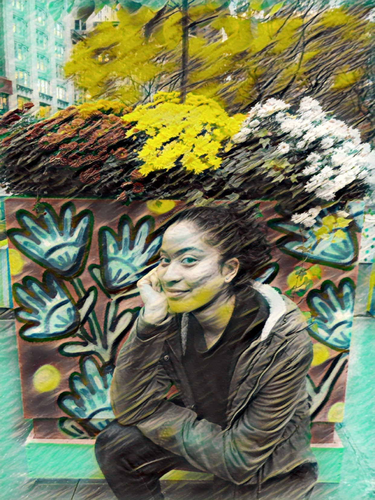

Thank you for visiting my website. My name is Kelsey Swasey and I am a New York based photographer. Two years ago, photography became a passion of mine. Photography is a way I can express myself. I love the idea of walking around any corner, park, and place in New York City and capturing images behind the camera. Photography is a way to hold memories and cherish them. The vibrant colors in a photograph is one step to an aesthetic mindset. In the future, I hope to experience new adventures and illustrate more extravagant photos.
Social Media: Instagram